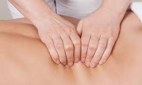
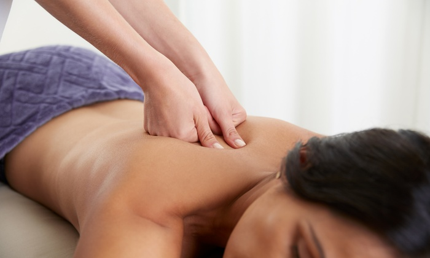

Deep tissue massage is a type of massage therapy that focuses on realigning deeper layers of muscles and connective tissue. It is especially helpful for chronically tense and contracted areas such as stiff necks, low back tightness, and sore shoulders. Some of the same strokes are used as classic massage therapy, but the movement is slower and the pressure is deeper and concentrated on areas of tension and pain.
When there is chronic muscle tension or injury, there are usually adhesions (bands of painful, rigid tissue) in muscles, tendons, and ligaments. Adhesions can block circulation and cause pain, limited movement, and inflammation.Deep tissue massage works by physically breaking down these adhesions to relieve pain and restore normal movement. To do this, the massage therapist often uses direct deep pressure or friction applied across the grain of the muscles.
 